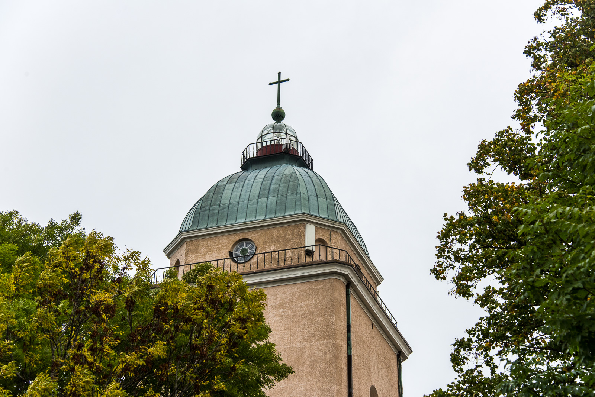
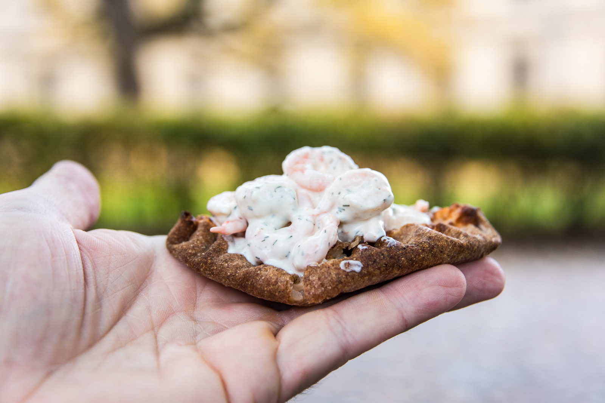

Three Flags
over One Rock
This is not a guided walk but an audio tour: a numbered route across the fortress islands, with each stop triggered from a map on your phone. The narrator is unnamed and the script is polite, level and well organised. It makes a good companion to the Helsinki city-centre walk, which pointed at this island from the harbour and left it there.
The route begins on the northern end of Iso-Mustasaari, Big Black Island, the largest of the fortress islands. The group of islets was once called Susiluodot, the Wolf Islets, and the tour's first act is to turn the visitor around and look back at Helsinki, a small town of unpainted grey wooden houses when work began in the spring of 1748.
Sveaborg, "Swedish fortress", was the Swedish name. After the fortress surrendered to Russian troops in May 1808 and Finland became an autonomous Grand Duchy the following year, the name was Finnicised as Viapori and the place became a Russian garrison town. In 1918, after independence, it became Suomenlinna, "Castle of Finland", and a Finnish garrison.
Each change of name left its mark on the buildings, and most of the tour is about reading those marks.
Two practical points from the introduction. The fortress roads have no names: each island has a letter from A to H and each building has a number. And the tour is meant to be taken in order but can be dipped into at will.
Living on
Suomenlinna
From the pink Jetty Barracks the route climbs through an arched passage to a junction. A large yellow stone house stands at the end of a sharply turning road; it was built in the 1760s for officers and officials, has been carefully restored and is still lived in. Its address, the narrator notes, would be Suomenlinna C52 — island letter, building number.
From here the route follows the island's main street, which also has no name. It runs between brightly painted wooden houses and the church, and carries most of the island's museums and services.
The Merchants' Quarter
& the Two-Week Rule
The wooden houses along the right of the road belong to the Russian period that began in 1808. Soldiers and civilians came to Viapori from across the empire, and merchants followed. The houses seen today date from the late 1800s and form part of a quarter that, the guide says, contains some of the oldest commercial buildings in Finland. Their tall gable ends face the street, and each has a wide columned porch, a fashionable place to chat with other customers.
Merchants in the fortress often held exclusive rights to the goods they sold, but with a condition attached. They had to keep a two-week stock of food in case of siege.
It is a neat reminder that the town and the fortress were one organism: the shops were part of the defence.
The Church that
Became a Lighthouse
A fortress church had been planned in Swedish times and again under the Russians, and was finally completed in 1854 as the Orthodox Church of Alexander Nevsky. After independence the Finnish garrison was Lutheran, and the church was remodelled to suit. The onion domes came off, the tower was rebuilt as a square, and the work was done on top of the older structure so that the round shape of the original tower survives inside.
The audio guide dates the renaming of the fortress to "the year after" independence, in May 1918. Independence itself was declared in December 1917. The conversion work belongs to the 1920s, with the main renovation in 1927–29.
Look up at dusk and a glass dome under the cross flashes four times, then pauses. That is H in Morse code, for Helsinki. The tower has served as a beacon for ships and aircraft for almost a century.
The church fence is the other detail to find: its posts are obsolete 18th-century Swedish cannon barrels, joined by heavy chains. The first cannons of the route are doing duty as a fence.
Noah's Ark &
the Painted Windows
The four-storey dwelling known as Noah's Ark stands on the left of the road, looking a little lost. Nobody knows where the name comes from. It is the only part ever built of a Swedish plan for a courtyard for the army fleet, and it is still a residence.
The tour uses it to make a point about fortress housing: it was arranged around squares and in successive courtyards, designed with defence in mind rather than the street plan of a normal town.
Look at the end of the building facing the road. The upper windows around the corner are not real but painted. Glass was expensive and the wind was cold, so the builders gave the façade a respectable look more cheaply.
Further downhill stands a red-brick building with a square tower, once a state-of-the-art telegraph and telephone exchange from 1905. The cable brackets on its roof were left in place, a small piece of communications history that the route treats as an exhibit in its own right.
Artillery Bay,
the Heart of the Naval Base
The transcript's "Tyggistalati" is Tykistölahti, Artillery Bay, a strait rather than a bay in the usual sense. The eastern part was called Artillery Bay in Sveaborg's time and the western part, to the right of the bridge, the Dock Bay. Together with the shipyard it formed the core of the naval base, sheltered by walls and rocky islets and home to the Swedish army's archipelago fleet.
The shipyard is still working. The big red-brick building beside the bridge was the inventory chamber, where the fleet stored its equipment and weapons over the winter. Its roadside section was destroyed in Soviet air raids in 1944, and rebuilt for the fortress's 250th anniversary. The museum was opened in the building in 1998. (The audio transcript garbles the museum's name as "Swammerlinna"; it means Suomenlinna.)
The Ruotsinsalmi
Monument
Across the bridge, a grey stone monument with gold lettering carries the date 1790, the last year of Gustav III's Russian War. The Swedes call the battle fought that summer Svensksund; the Finnish name is Ruotsinsalmi, which gives the monument its name. (The identification of the battle is ours; the audio only says the year and the war.)
The narrator turns the visitor around to look at the walls and imagine the bare, rocky skerries that were here in 1748. The Swedish parliament, after years of debate, had decided to base the defence of the eastern border on fortifications and the navy: troops would hold the frontier until help arrived from the mainland. The main base was to be here, at Helsinki.
All the stone in the fortress walls was blasted and quarried from the islands themselves. Helsinki, a small town, could supply neither building materials nor lodging for the soldiers who were ordered here from all over Finland, so nearly everything had to be improvised on site.
Bastion Höpken
& the Cost of Building a Fortress
At the archway, look at the foot of the wall on the left. The builders did not clear every rock; they incorporated outcrops as the lower courses of the defences, which saved money. A small nameplate to the right identifies the bastion as Höpken, named after Count Andreas Johan von Höpken, a councillor of state: the fortifications were named after the realm's most prominent politicians.
The work was led by Lieutenant Colonel Augustin Ehrensvärd, who arrived from Stockholm in January 1748 and chose a bastion fortress, a type previously built on the flat plains of central and southern Europe. Here the walls had to follow high cliffs and the shapes of the islands. The guide claims that Suomenlinna is the only bastion fortress built on islands on high cliffs in varied terrain; that is the narrator's claim and we have not tested it. Where space was short, a "curtain house" with people living in it replaced the usual straight curtain wall, so that homes were part of the defence.
Step inside, mind the brick stairs, and you are in a vaulted casemate. The fortress's guns stood on two levels, on top of the walls and in vaulted rooms like this one. The nearest gun port looks out on Artillery Bay, the fortress's main passage. Guns had a short range in those days, so they had to be set close to the shore.
The soldiers who built it worked ten hours a day, stretching to fourteen under additional contracts. They ate dried meat and fish, and in the early years the work and the epidemics took a terrible toll. In some regiments, up to twenty men in every hundred died in the first years. Conditions improved afterwards, and Ehrensvärd did what he could for lodgings and food.
The Great Courtyard
& a Founder in the Square
This was the fortress's main square, and the original monumental layout was destroyed by an Anglo-French naval bombardment in August 1855, during the Crimean War. Before that, the square had already changed once. Ehrensvärd died in October 1772, and Gustav III ordered him buried in the fortress, in the middle of the Great Courtyard. His remains were placed in the vault in July 1783, with the headstone laid by the king himself.

The inscription, as the narrator reads it, describes him as a field marshal and knight, lying among his works: the fortress and the army fleet. The fleet is remembered in bronze Roman naval staves on the monument. A museum in the commandant's house tells his story.
The yellow house beside Bastion Höpken was the commandant's residence, and it linked two bastions, so it was part of the defensive wall. A door on its upper floor opens directly onto the top of the bastion, where the guns stood; the commandant's bedroom was behind it. "Always on the alert", the narrator says.
The bombing destroyed half the house, and it had to be demolished after 1855. Bastion Ekeplan, at the other end, was lost as well, so the square lost its symmetry. Two Russian-era mortars now stand about where the missing end used to be.
One building from the original layout survives untouched: the curved house of the garrison's local major, on the right of the tomb. The audio guide calls it the oldest independent residential building in Helsinki. We have not verified the superlative, and it sits oddly with the Sederholm House, built in 1757, which the Helsinki post describes as the oldest in the city centre; Suomenlinna being offshore, the two claims may both hold, but they are the guides' words, not ours.
The Dockyard
That Never Closed
A red-brick building with large wooden gates marks the shipyard, which the guide calls the oldest in Finland and one of the oldest still working anywhere. Work began in 1750, and until 1808 it was the base of the Swedish archipelago fleet's Sveaborg squadron. In the 1760s the famous naval architect Fredrik Henrik af Chapman directed the building of ships for that fleet here.
After independence it housed the State Aircraft Factory, which produced Finland's first aircraft. In the 1930s the inner basin served as a submarine base. After the Second World War shipbuilding passed to Valmet, which began by building war-reparation ships for the Soviet Union.
Piper's Park &
the Cannons
Piper's Park is called the most historically important park on the island: formal gardens, a water canal and a gazebo were laid out in the 1700s, a pond and walkways followed in the early 19th century, and the present form dates from the 1870s. A café was built for visitors after independence, and the park was last restored, on a small scale, in 2009.
The next stop concerns the bombardment itself. On 9 August 1855 the defenders could do little against an Anglo-French fleet with modern guns, since the old Swedish cannon did not reach nearly as far. After the war the Russians re-equipped the fortress, throwing up large earthworks on Kustaanmiekka (the transcript's "Kustaanmieki") and topping the new ramparts with heavy naval guns cast in Perm and St Petersburg.